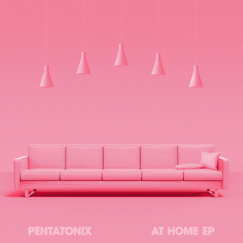
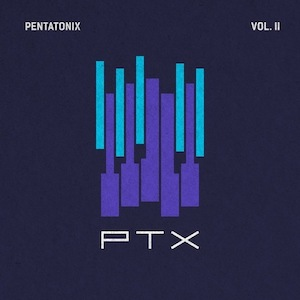
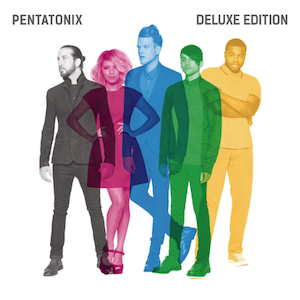

Pentatonix is a Pop Acapella Band created in 2011, consisting of five members. The band is well-known for its unique sound of popular sound remakes. They also finds much success in original pieces, their holiday music happens to be my favorite.
Enjoy a some samples of a few of Pentatonix' past and current albums.
  